Étudiant en 3ᵉ année de BUT Réseaux et Télécommunications à l’IUT de Villetaneuse, je développe mes compétences techniques et opérationnelles en alternance chez Orange, en tant que Technicien Réseaux Structurant.
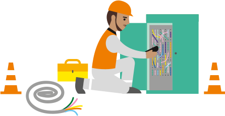
Étudiant en 3ᵉ année de BUT Réseaux et Télécommunications à l’IUT de Villetaneuse, je développe mes compétences techniques et opérationnelles en alternance chez Orange, en tant que Technicien Réseaux Structurant. Intégré dans un environnement dynamique et collaboratif, je participe activement à la production, la maintenance et la supervision d’équipements réseau tels que DSLAM, routeurs, multiplexeurs ou faisceaux hertziens. Ces interventions, pilotées via un système de tickets, m’ont permis de comprendre l’importance de chaque action dans la chaîne de communication. Grâce à ma formation universitaire, j’ai acquis de solides bases en protocoles réseau, cybersécurité, routage, systèmes Linux et téléphonie IP. En parallèle, j’ai renforcé ces acquis via des formations internes chez Orange, notamment sur la sécurité et les infrastructures opérateurs. Rigoureux, autonome et passionné par les technologies télécoms, je souhaite à terme évoluer vers un poste de chef de projet réseau, en contribuant à la conception et au pilotage de solutions innovantes, fiables et évolutives.
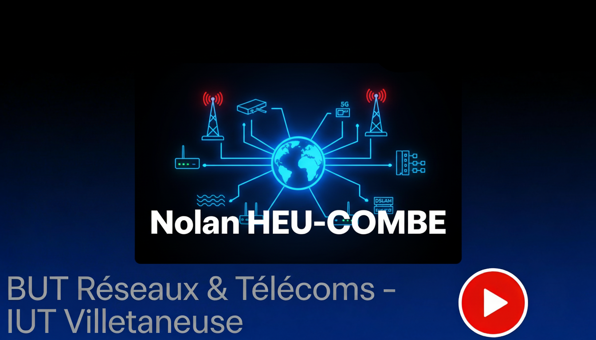
Maintenance curative sur infrastructures télécoms : diagnostic d’incidents, analyse de pannes, interventions terrain et respect des GTR. Installation, remplacement et mise en service d’équipements cœur de réseau et d’accès, notamment sur des environnements DSLAM, MTS et baies opérateurs. Suivi des opérations dans les outils et bases de données techniques, avec traçabilité des actions réalisées.
Maintenance préventive et fiabilisation du réseau : contrôles qualité, vérifications d’environnement technique, coordination avec les sous-traitants et préparation des interventions. Appui à la supervision et à l’analyse d’incidents avec les équipes Conduite d’activité et ASI, gestion du matériel, mises à jour logicielles, documentation d’exploitation et application rigoureuse des règles sécurité, qualité et environnement sur site.
Mention Très Bien. Mention Bien aux diplômes précédents.
Formation orientée réseaux, systèmes et télécommunications, avec une approche pratique des architectures IP, du routage, de la cybersécurité, des systèmes Linux et des services réseau. Mention Très Bien, avec consolidation progressive des compétences techniques et méthodologiques.
Réalisation de projets en administration réseau, automatisation, traitement de données et supervision. Exploitation de données issues du système d’information, développement de scripts et mise en place de traitements récurrents pour produire des vues synthétiques utiles à l’exploitation, au pilotage technique et à l’analyse d’infrastructures.
Développement d'un site web pour automatiser le traitement et la visualisation des données.
Création d'une vidéo sur l'hygiène informatique, mettant en lumière le phishing.
Analyse approfondie d'une attaque DDoS et propositions de défense numérique.
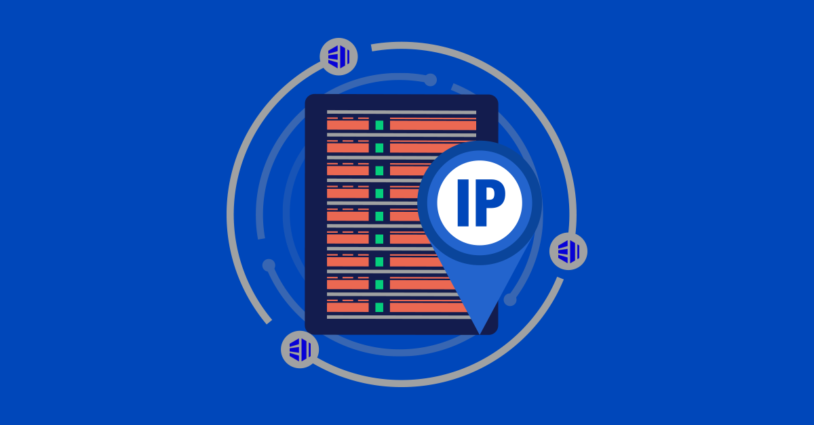
Automatisation et gestion centralisée des connexions Internet pour une start-up.
Création et configuration d’un réseau informatique complet avec fonctionnalités avancées.
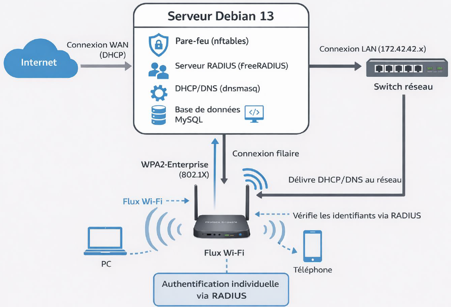
Mise en place d’une infrastructure Wi-Fi sécurisée avec authentification 802.1X et administration centralisée des accès.
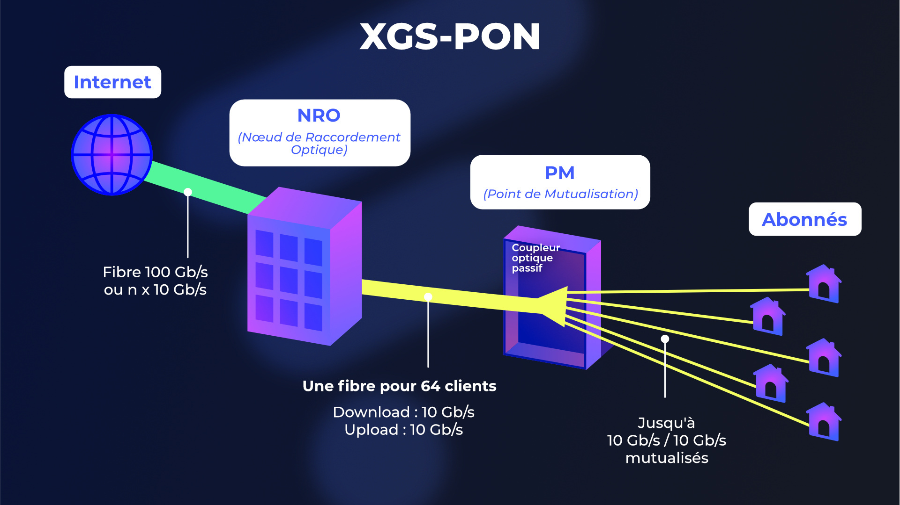
Projet autour de la transformation du réseau FTTH vers le XGSPON 10G, avec évolution de l’architecture OLT, ajout de coupleurs 1:2 et passage à l’ingénierie 1:128.
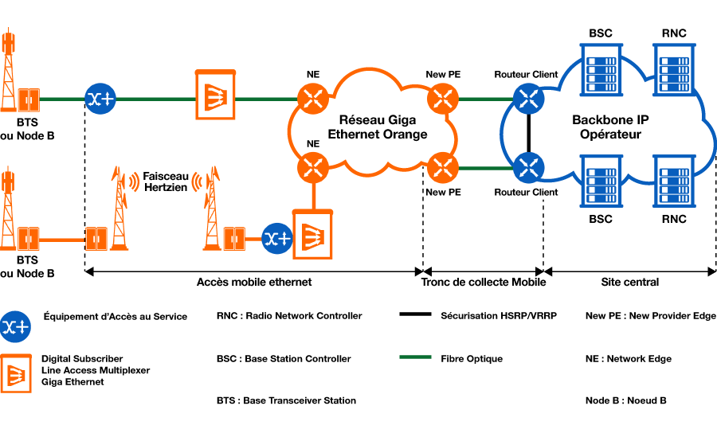
Présentation de plusieurs équipements et environnements techniques observés en entreprise : routeurs, transport optique, site mobile, OLT et répartiteurs.
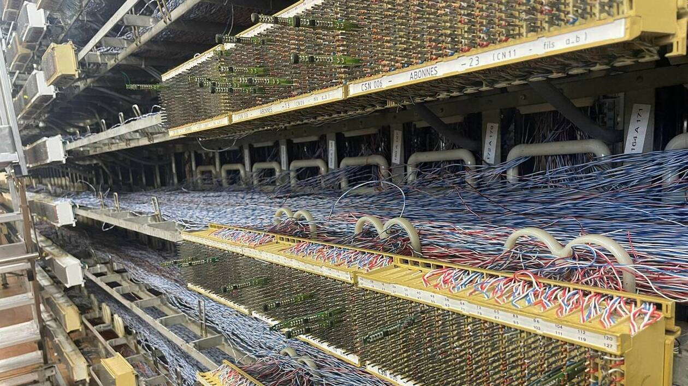
Présentation de la fermeture progressive du réseau cuivre et des actions menées pour accompagner la transition vers des infrastructures plus récentes.
Aperçu de plusieurs équipements et environnements techniques rencontrés en entreprise, utilisés dans les réseaux IP, optiques, mobiles et d’accès.
Les Nokia 7750 SR sont des routeurs de service utilisés dans les réseaux opérateurs pour l’agrégation, le cœur IP ou l’edge. Ils assurent l’acheminement des flux avec de hautes capacités, des fonctions avancées de routage, de QoS et d’intégration dans des architectures IP/MPLS.
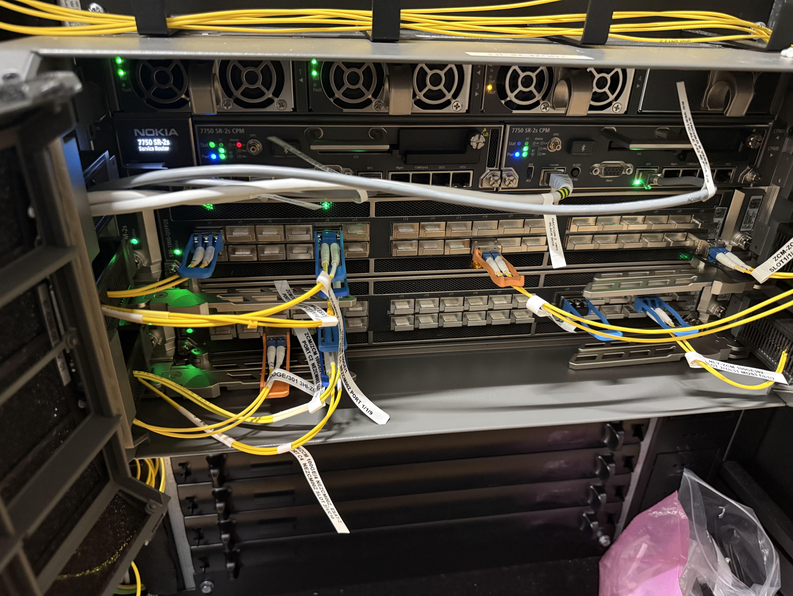

Un site mobile permet d’assurer la couverture radio pour les services 4G et 5G. Il regroupe généralement des antennes, des équipements radio, de l’énergie, du transport et des liaisons vers le réseau opérateur, afin d’acheminer le trafic voix et données des utilisateurs.
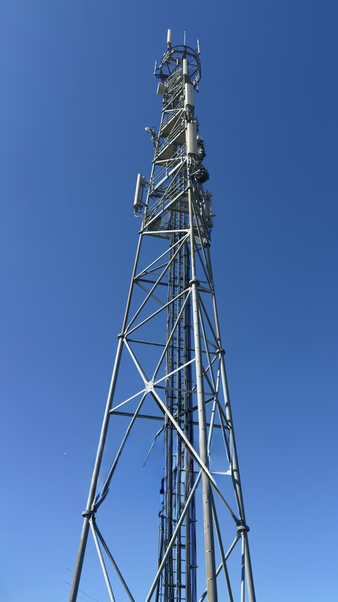

L’OLT (Optical Line Terminal) est l’équipement central du réseau FTTH. Il relie le réseau de collecte au réseau d’accès optique et pilote la communication avec les ONU/ONT côté abonnés, en répartissant les flux descendants et en gérant les remontées montantes.

Le répartiteur est une zone d’organisation, de brassage et de distribution des liaisons. Côté cuivre, il permet de raccorder et distribuer les paires vers les lignes utilisateurs. Côté fibre, il sert à organiser les tiroirs, les connexions optiques et les départs vers les différents segments du réseau.

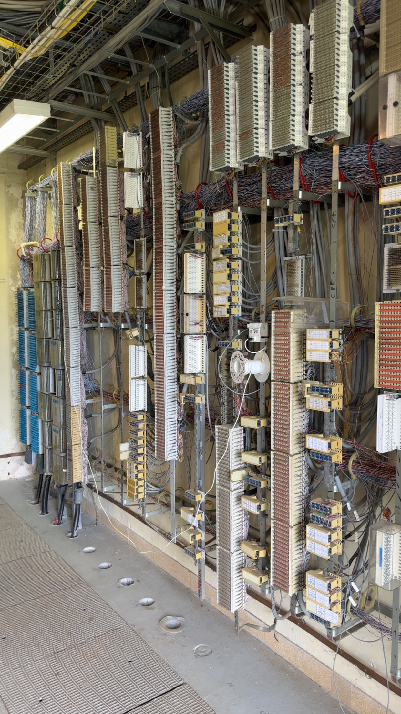
Mention Très Bien

Orange, équipe d'intervention entreprise 77/93
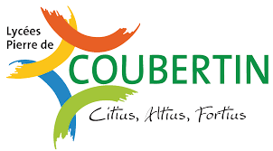
Sciences et technologies de l'industrie et du développement durable
Mention Bien

Obtenu Mention Bien (Alternance chez Orange)
Formations internes Orange sur la sécurité et les infrastructures opérateurs.
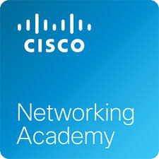
EMEA NetAcad Cup 2025

B2V, BR, BC, BE essai, H0
Obtenue le 21/11/2024 — valable jusqu’au 21/11/2027
Obtenu en 2023
N’hésitez pas à me contacter pour une opportunité, une collaboration ou toute question.